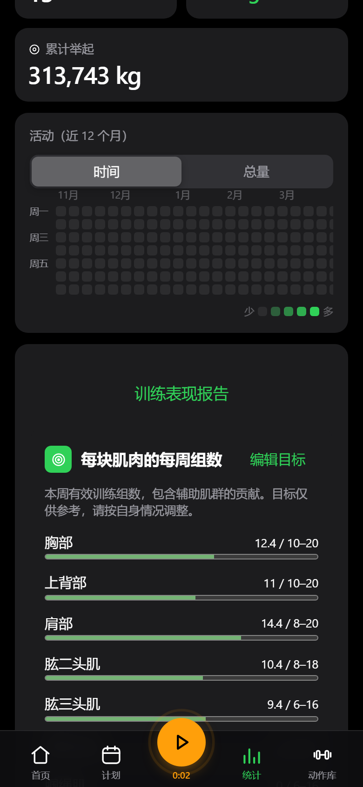
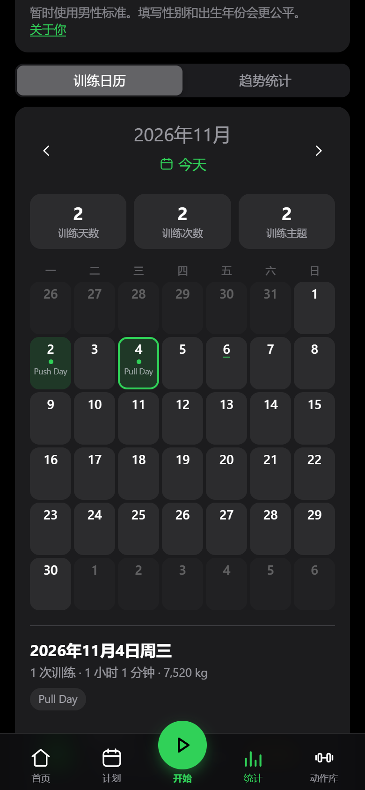
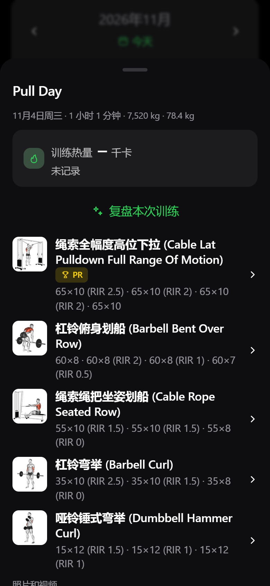

训练计划
安排训练日和动作，
设定组数、次数与休息。
官方核心功能 × 我们的定制拓展
适配范围按发布方说明 · 手表通过 orbibitv 安装
未上架官方手表应用商店


通过 orbibitv 安装 · 未上架官方手表应用商店


GT1 方屏重点适配 390×450；另提供圆屏包。
适配范围按发布方说明，未逐台完成真机验收。
先安排，再开练；把过程留下来。
安排训练日和动作，
设定组数、次数与休息。
记录重量、次数，
按自己的节奏完成训练。
对照过去的训练记录，
为下一次调整提供参考。
用趋势、统计与报告回顾训练。
回顾训练量与肌群分布，
为下一步安排提供参考。
对比一段时间的数据，
观察训练变化。
从趋势页进入报告，
进一步复盘与导出。

不是只有一张训练记录表。
查看动作资料与示范内容，
为训练安排提供参考。
官方已有 AI 教练；
使用范围取决于配置与部署。
源码可查，按需管理数据，
选择适合自己的使用方式。
日期 → 当天训练 → 动作与组记录


日历格显示训练主题；点击当天训练查看动作明细。
不是把完整动作清单挤进每个日期格。
把日常提问，接到可确认的修改流程。
说明训练日、动作范围和调整目标。
检查动作匹配、修改前后值与合法性。
不是只给一段文字，也不静默修改。
拓展普通聊天到确认应用；AI 教练为官方已有能力。
训练可以丢弃，也能接回原来的记录。
丢弃当前未保存的训练或接续内容，
不等于删除原来已经保存的历史。
保留已有动作、组记录与此前用时，
保存后更新原记录，不重复新建一场。
接续前需先结束当前正在进行的训练。
「今天再练一次」则是另开一场新训练。
让已有能力更贴近日常使用。
在官方已有中文支持之上，
完善动作名称、描述和训练要领。
不是把中文支持当作本分支首创。
GitHub 构建与发布、应用更新 JSON，
手机和手表安装包、校验文件同发。
下载有出处，版本可核对。